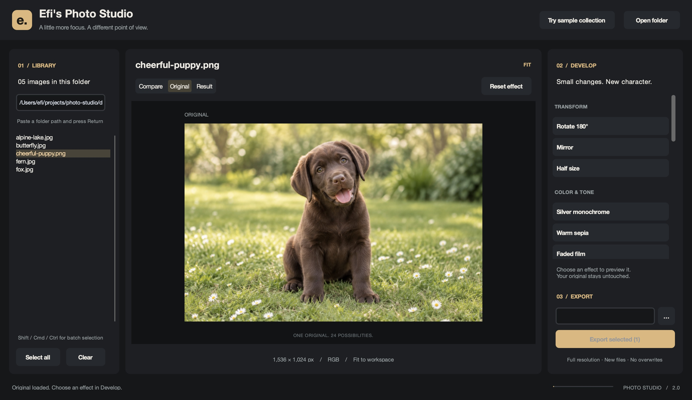
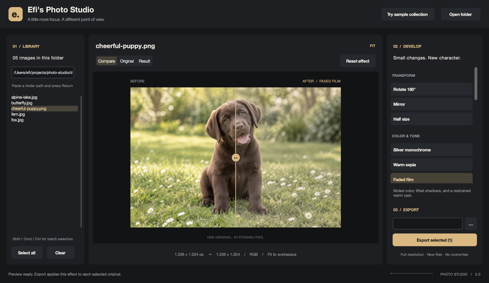
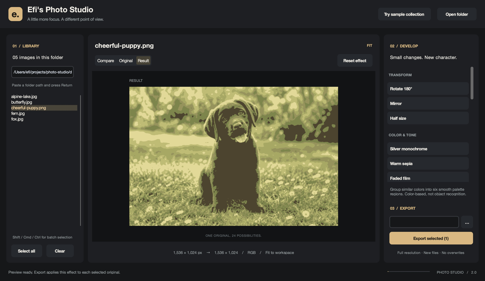
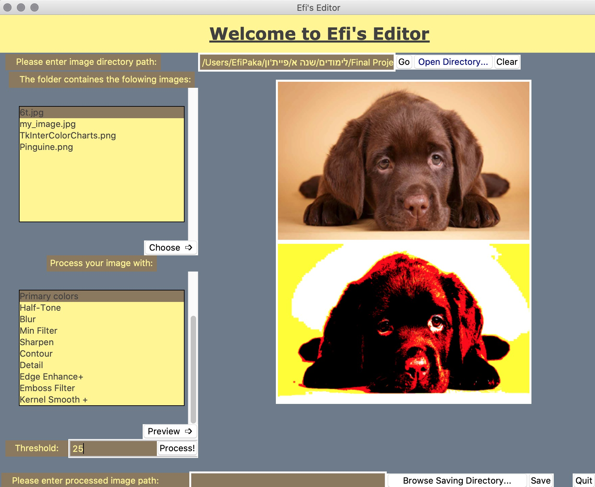

Explore without losing.
Every effect starts from the original. Compare, reset, and try something else. Desktop exports become new files, never silent overwrites.
A FAMILIAR TOOL. A NEW POINT OF VIEW.
A quiet space to experiment with color, texture, and form. Twenty-four image operations, a considered desktop interface, and your originals always intact.
01 / A LITTLE EXPERIMENT
Choose an effect. Move the divider.
Or try a photo of your own.
This is a lightweight browser demo. Images are fitted to 1,600 px for responsiveness; downloads use that preview size. For full-resolution processing and batch export, use the desktop app. Animated files use their first frame.
THE FIELD COLLECTION
Animals. Wild places. Small details.
Choose an image to make it your canvas.
Four real photographs from Unsplash, plus our generated puppy. Bundled with the desktop app. Meet the photographers and view image credits ↗
Every effect starts from the original. Compare, reset, and try something else. Desktop exports become new files, never silent overwrites.
Browse a whole folder, select the images you want, and apply the same operation in one batch.
The original fourteen operations are still here, joined by ten new filters and segmentation tools. Now with a spacious preview, a focused inspector, and a calmer workflow.
02 / THE DESKTOP WORKSPACE
A library on the left. Your image at the center.
The finishing touches within reach.



03 / THE COMPLETE TOOLKIT
Rotate 180° · Mirror · Half size
Silver monochrome · Warm sepia · Faded film · Ink & sand · Soft vignette
Six-color regions · Foreground cutout (desktop)
Edge recognition · Primary colors · Halftone · Contour · Emboss · Posterize · Solarize
Gaussian blur · Minimum filter · Sharpen · Detail · Edge enhance+ · Kernel smooth · Auto contrast
2018 → TODAY / THE SAME CURIOSITY
In 2018, Efi built the original editor entirely by hand: 100% human-written code, no AI assistance. It came before the modern AI coding era, and that original work still has its own home.
Today's studio is a separate, AI-assisted successor built with Codex under Efi's direction. The same fourteen operations, ten new possibilities, and a completely new place to explore them.
Visit the hand-written 2018 original ↗
YOUR NEXT PERSPECTIVE IS ONE IMAGE AWAY.